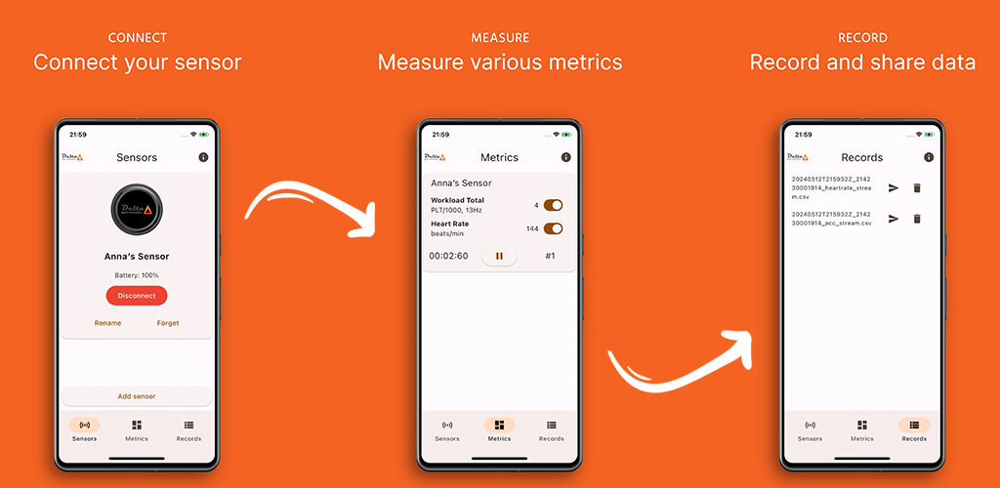
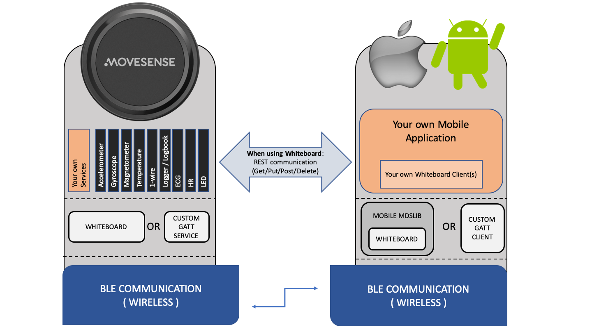

Movesense platform development

View in App store View in Play store Send email BioDelta Sport Innovation approached me to design, implement, test, and release their Movesense-based mobile athlete activity tracking system. The system is built from scratch and comprises a Flutter app and Movesense firmware extension.
App
Due to budget restriction, speed-to-market, and an active developer community, I opted for Flutter, in order to build iOS and Android apps from a single codebase. I built the list of requirements in a series of brainstorm sessions with the client. The project was managed using an agile approach with two-week sprints. Using Flutter's widgets, I constructed the UI screens iteratively. Movesense offers a plugin for Flutter, allowing the app to connect to the sensor over Bluetooth. During development, I discovered many challenges with this sensor, which, although well-documented by Movesense, are not fully disclosed.
Firmware
The Movesense documentation contains a diagram showing how the firmware, located on the sensor itself, and the client interact. The design of any application on the Movesense platform must take these components, as well as Bluetooth transmission, into account.

The platform allows the underlying base firmware to be updated while maintaining support for the custom-built software. This is possible due to the Whiteboard library that exposes REST-like services. The Movesense team also made a variety of sample apps showcasing the capabilities of the sensor.